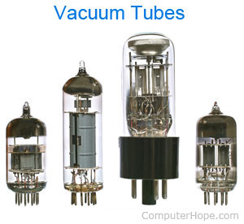

Vacuum Tubes, Alternatively referred to as valve, is a glass device which were used for amplification of a weak current, rectification of an alternating current (AC) to direct current (DC), generation of oscillating radio-frequency (RF) power for radio and radar, and creation of images on a television screen or computer monitor.

Vacuum Tubes
The vacuum tube is a glass tube with its gas removed, creating a vacuum. Vacuum tubes contain electrodes for controlling electron flow and were used in early computers as a switch or an amplifier.
By using vacuum tubes instead of a mechanical relays computers could move away from mechanical switching and speed up the switching on and off the flow of electrons. Vacuum tubes were also used in radios, televisions, radar equipment, and telephone systems during the first half of the 1900s.
In the 1950s, the transistor started to replace the vacuum tube as vacuum tubes were larger, fragile like a light bulb, and expensive. As computing devices started to become smaller in size, transistors were more ideal to use due to their smaller size as well.
Today, vacuum tubes are primarily used in high-end audio equipment, preferred by some audiophiles as an alternative to digital systems.